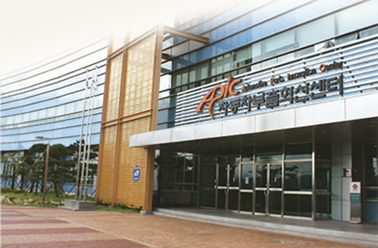
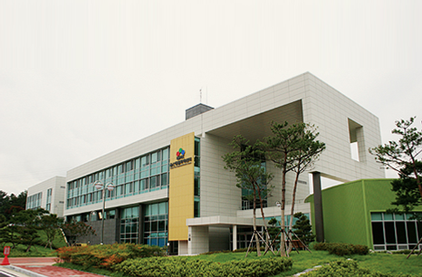
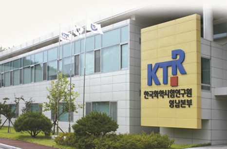

先端研究支援施設
- Home
- 投資メリット
- 投資環境
- 先端研究支援施設
先端研究支援施設
蔚山の公共研究機関と250社余りの企業付設研究所などは地域の研究開発および革新能力の向上のために努力しています。
自動車部品革新センター

自動車部品革新センターは産業通商資源部と蔚山広域市の共同出捐で設立された自動車部品産業総合支援機関であり、蔚山の中核戦略事業である「オートバレープロジェクト」の中心軸の役割を果たしています。
また東南圏自動車部品メーカーを有機的に結集し、先端技術力の開発による自動車産業の競争力を保つための事業を行っています。
事業分野
機器共同利用事業 / 共同技術開発事業 / 企業支援事業 / 教育訓練事業/ ネットワーキング事業/ 創業インキュベート事業
主要保有機器 現状
| 試験評価 | 安全試験 | 研究企画 | 部品開発 |
|---|---|---|---|
| 6軸ロードシミュレーター(Half Car) | 衝突試験車両牽引装置 | Hyperworks | 3次元測定器 |
| 線形油圧耐久試験機 | Dummy | Deform | 急速造形機(FDM) |
| MAST(多軸振動耐久試験機) | デジタル高速カメラ | Abaqus | 5軸高速加工機 |
| 2軸疲労試験機 | Europo Side Impact Test Cart | Nastran | 放電加工機 |
| 騒音分析システム | USA Side lmpact Test Cart | レーザー溶接機 | |
| 振動分析システム | 静的転覆装置 | Patran | レーザー熱処理装置 |
| 多関節耐久試験機 | 後方燃料漏れ衝突台車 | Magma | 大型イオン窒化処理装置 |
| CT-X線試験機(非破壊) | 多関節3次元測定器 | Pam-Stamp | |
| 成分分析機(EPMA) | 歩行者保護試験装置 | ||
| ビデオマイクロスコープ | 衝突試験用障壁 |
- 施設現況 : 本館棟、研究棟、信頼/工作棟
- 安全試験センターの施設現況 : 走行試験場、ダミー室、転覆試験場
蔚山精密化学センター

精密化学センターは、蔚山地域の化学企業の研究開発、 製品認定および評価などを支援するために蔚山広域市と産業通商資源部が共同出捐で設立した研究支援施設です。
同センターは先端の研究施設や機器、 マーケット·フレンドリーな技術開発能力、 産·学·研のネットワークが整っており、蔚山地域の石油化学産業を高い付加価値と技術集約的な精密化学産業へと高度化する中心的な役割を果たしています。
事業分野
RIS事業 / ネットワーキング事業 / 創業インキュベート事業 / 研究開発事業 / 教育訓練事業/ 試験生産事業 / 設備利用事業
保有設備(物質分析)
誘導結合プラズマ分光器 / 走査電子顕微鏡 / 誘導結合プラズマ質量分析装置 / マイクロウェーブ試料前処理システム / 赤外分光分析装 / ガスクロマトグラフィー / ガスクロマトグラフィー質量分析装置 / 高性能液体クロマトグラフィー / 全有機炭素分析装置 / 紫外·可視光線分光光度計 / X線回折分析装置 / 時差熱重量分析計 / 粒度分析装置 / イオンクロマトグラフィー

保有設備(試験生産)
押出機 / 射出成形機 / 耐候性実験機 / 塗装強化オーブン / コンピュータカラーマッチングシステム / 分光光度計 / 薄膜蒸留装置 / 昇華精製装置

韓国化学融合試験研究院

韓国化学融合試験研究院は、 優秀な人材と国際的な基準に適する専門性のある韓国の代表的な公認試験·検 査認定機関です。
また、 このセンターは従来の試験分析領域だけでなく、 新技術の領域をたゆまず研究し、 先進国並みに品質の高い試験分析、 評価、 品質保証、 認定サービスを提供しています。
事業分野
- 標準化研究開発
- 支援事業 : 産·学·研共同の技術開発コンソシアム事業 / 特許技術性の評価 / 代替洗浄技術支援事業
- 製品認証 : Q(品質保証)マーク / Sマーク(国家公認製品認証) / GQ(中小企業優秀製品)マーク
- 認証 : KS 認証 / JIS認証 / SGマーク業務の受託機関(日本) / RW TUVと業務協約締結(ドイツ)
韓国化学研究院

韓国化学研究院は新薬、新素材、持続成長化学技術などの先進化学技術の研究により、私達の世代のみならず、次の世代の暮らしの質と環境に貢献できるよう研究を進めています。
事業分野
- グリーンエネルギー素材分野 : 水素エネルギー·太陽エネルギーなどの再生可能エネルギー
- 石油化学工程高度化分野 : P2P高度統合ネットワーク、新触媒·新工程、廃棄物の資源化
- 融複合新素材分野 : 自動車·造船産業などシナジー創出の高機能先端素材の開発
- 精密化学分野 : 高付加価値化・先端化の研究、技術移転に伴う実用化の研究